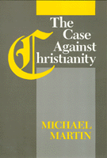

<body bgcolor="#FFFFFF" text="#000000" link="#0000FF" vlink="#CC0000" alink="#CC0000"><center><hr width="350" size="1" align="center" noshade>A rational critique of Christianity<hr width="350" size="1" align="center" noshade><p><a href="https://cdcshoppingcart.uchicago.edu/Cart/ChicagoBook.aspx?ISBN=9780877227670&&PRESS=temple" target="_top">Buy this book!</a> | <a href="https://cdcshoppingcart.uchicago.edu/Cart/Cart.aspx?PRESS=temple" target="_top">View Cart</a> | <a href="https://cdcshoppingcart.uchicago.edu/Cart/Cart.aspx?PRESS=temple" target="_top">Check Out</a></p><p></p></center><!--none//--><h1>The Case Against Christianity</h1>
<h3>Michael Martin</h3>
<P>cloth 0-87722-767-5 $54.95, Apr 91, <FONT COLOR=#990033>Out of Print</FONT>
<br>paper 1-56639-081-8 $41.95, Oct 99, <FONT COLOR=#990033>Available</FONT>
<br>Electronic Book 1-43991-235-1 $40.95 <FONT COLOR=#990033>Out of Print</FONT>
<BR> 288 pp
5.5x8.25
</P><BLOCKQUOTE><I>"Martin has said something fresh and fruitful that theologians and philosophers of religion simply cannot afford to ignore....Every serious student of Christian doctrine would do well to spend time on Martin's insightful chapters."</I>
<br>&#151<b><I>Free Inquiry</I></b><I></I></BLOCKQUOTE>
<p>In this systematic philosophical critique of the major tenets of Christianity, Michael Martin examines the semantic and epistemological bases of religious claims and beliefs. Beginning with a comparison and evaluation of the Apostles’ Creed, the Niceno-Chalcedonian Creed, and the Athanasian Creed, Martin discusses the principal theological, historical, and eschatological assumptions of Christianity. These include the historicity of Jesus, the Incarnation, the Second Coming, the Virgin Birth, the Resurrection, Salvation through faith in Jesus, and Jesus as a model of ethical behavior.
<p>Until now, an adequately convincing criticism of Christianity did not exist. Martin’s use of historical evidence, textual analysis, and interpretations by philosophers and theologians provides the strongest case made to date against the rational justification of Christian doctrines.
<BR>&nbsp;<h2>Excerpt</h2><P>Excerpt available at <a href="http://www.temple.edu/tempress">www.temple.edu/tempress</a></p>
<BR>&nbsp;<h2>Reviews</h2>
<p><I>"A thorough, logical examination of the major tenants of Christianity by a professional philosopher (not a theologian).... [This] is the best book for the intelligent reader that examines the case for and against Christianity.... The book is must reading for all who discuss (or defend) Christianity from a critical point of view."</I>
<br>&#151<b><I>American Rationalist</I></b>
<p><I>"An insightful and provocative rational analysis of the major doctrinal claims of Christianity.... While a creative critique in its own right, this work is in the tradition of Friedrich Nietzsche, Bertrand Russell, Paul Kurtz, and Edmund Cohen among others...."</I>
<br>&#151<b><I>Choice</I></b>
<p><I>"This book is a joy to read. It brings together not only Martin’s thoughts about Christianity, but important views, pro and con, from important writers in the field from Russell to Aquinas, Kaufmann to Augustine, Robertson to Kierkegaard, etc.... Martin ‘s presentation of points of view on a topic, in every case, are to the point, detailed, and insightful."</I>
<br>&#151<b>Peter A. Angeles</b>, Santa Barbara City College
<p><I>"Martin is one of the very few first-rate philosophers who have had the fortitude and patience to carefully read much of the truly staggering amount of non-philosophical literature on Christian topics."</I>
<br>&#151<b>Peter H. Hare</b>, SUNY Buffalo
<BR>&nbsp;<h2>Contents</h2><P>
<p>Preface
<br>Introduction
<p>1. The Basis of Christian Belief
<br><I>Christian Belief and Epistemic Reasons &#149
Christian Belief and Beneficial Reasons &#149
Christian Doctrines and Faith &#149
Christian Doctrines as Basic Beliefs &#149
Conclusion</I>
<p>2. The Historicity of Jesus
<br><I>The Problem &#149
Skepticism and the Historical Jesus &#149
Wells’s Argument in Brief &#149
The Argument Expanded and Defended &#149
Criticisms of the Wellsian Thesis &#149
Conclusion</I>
<p>3. The Resurrection
<br><I>Initial Obstacles to Belief in the Resurrection &#149
The Evidence for the Resurrection &#149
The Purposes of the Gospel Writers &#149
The Inconsistency of the Resurrection Story &#149
The Lack of Eyewitnesses &#149
The Reliability of the Eyewitnesses, the Reporters, and the Scribes &#149
Lack of Independent Confirmation &#149
Habermas’s Defense of the Resurrection &#149
Conclusion</I>
<p>4. The Virgin Birth and the Second Coming
<br><I>The Virgin Birth &#149
The Story &#149
The Evidence &#149
The Coherence of the Virgin Birth with Jesus’ Genealogy &#149
Belief in the Virgin Birth and Improbabilities &#149
The Relevance of Virgin Birth to the Truth of Theism and the Incarnation &#149
The Second Coming &#149
The Evidence: What Did Jesus Teach? &#149
The Evidence: Was Jesus Correct and What Difference Would it Make? &#149
The Second Coming and Faith &#149
Conclusion</I>
<p>5. The Incarnation
<br><I>The Conceptual Problems of the Incarnation &#149
Four Conceptual Problems &#149
Morris’s Solution &#149
Evaluation of Morris’s Solution &#149
Conclusion on Conceptual Problems &#149
The Truth of the Incarnation &#149
Morris’s Defense &#149
The Evidence Needed &#149
Conclusion on the Truth of the Incarnation</I>
<p>6. Christian Ethics
<br><I>What Ethical Principle Did Jesus Teach? &#149
The Ethical Teaching of the Synoptic Gospels &#149
The Moral Practices of Jesus &#149
What Jesus’ Practices and Teachings Neglect &#149
Evaluation of Jesus’ Ethics &#149
The Love of God and Faith in Jesus Commandments &#149
The Purity of Heart and Language Commandment &#149
The Commandment of Humility &#149
The Love Your Neighbor Commandment &#149
Conclusion</I>
<p>7. Salvation by Faith
<br><I>Biblical Doctrines of Salvation &#149
Evaluation of the Doctrine &#149
The Dependency on Other Christian Doctrines &#149
The Incompatibility with Belief in an All-Good God &#149
Conclusion</I>
<p>8. Christian Responses
<br><I>Nonliteralism &#149
The Symbolic Meaning and the Virgin Birth &#149
Demythologizing and Eschatology &#149
Noncognitivism and Agape &#149
Other Possible Responses &#149
Rationalism &#149
Historical Subjectivism &#149
Extreme Fideism or Irrationalism &#149
Moderate Fideism &#149
Christian Foundationalism &#149
Liberal Reductionism &#149
Conclusion</I>
<p>Appendix A: The Divine Command Theory
<br><I>Varieties of the Radical Divine Command Theory &#149
Evaluation of the Radical Divine Command Theory &#149
The Semantics Problem &#149
Moral Problems &#149
The Epistemological Problem &#149
The Conceptual Problem &#149
A Modified Divine Command Theory &#149
Conclusion</I>
<p>Appendix B: The Atonement
<br><I>Major Theories of the Atonement &#149
The Ransom Theory &#149
The Satisfaction Theory &#149
The Acceptance Theory &#149
The Penal Theory &#149
The Government Theory &#149
The Moral Theory &#149
The Christus Victor Theory &#149
The Mystic Theory &#149
Conclusion</I>
<p>Biblical Index
<br>General Index
</P><BR>&nbsp;<H2>About the Author(s)</H2>
<P><b>Michael Martin</b>, Professor of Philosophy at Boston University, is the author of <I>The Legal Philosophy of H.L.A. Hart</I> and <I><a href="672_reg.html" target="_top">Atheism: A Philosophical Justification</a></I> (both from Temple).</P>
<BR><H2>Subject Categories</H2>
<p><A HREF="/tempress/religion.html" TARGET="_top">Religion</a>
</p>
<p align="center"><a href="https://cdcshoppingcart.uchicago.edu/Cart/ChicagoBook.aspx?ISBN=9780877227670&&PRESS=temple" target="_top">Buy this book!</a> | <a href="https://cdcshoppingcart.uchicago.edu/Cart/Cart.aspx?PRESS=temple" target="_top">View Cart</a> | <a href="https://cdcshoppingcart.uchicago.edu/Cart/Cart.aspx?PRESS=temple" target="_top">Check Out</a></p><p><font face="Arial" size="1"><a href="copyright.html" onMouseOver="window.status='Web Copyright Policy';return true;" onMouseOut="window.status=''" title="Web Copyright Policy">&copy;</a> 2015 <a href="http://www.temple.edu" target="new" onMouseOver="window.status='Link to Temple University home page';return true;" onMouseOut="window.status=''" title="Link to Temple University home page">Temple University</a>. All Rights Reserved. http://www.temple.edu/tempress/titles/776_reg.html</font></p>